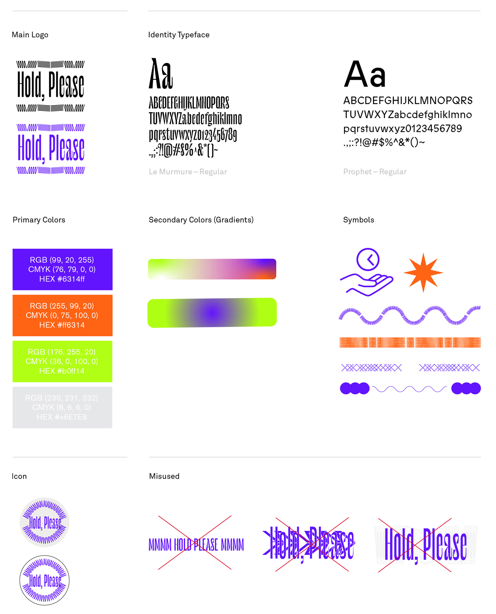
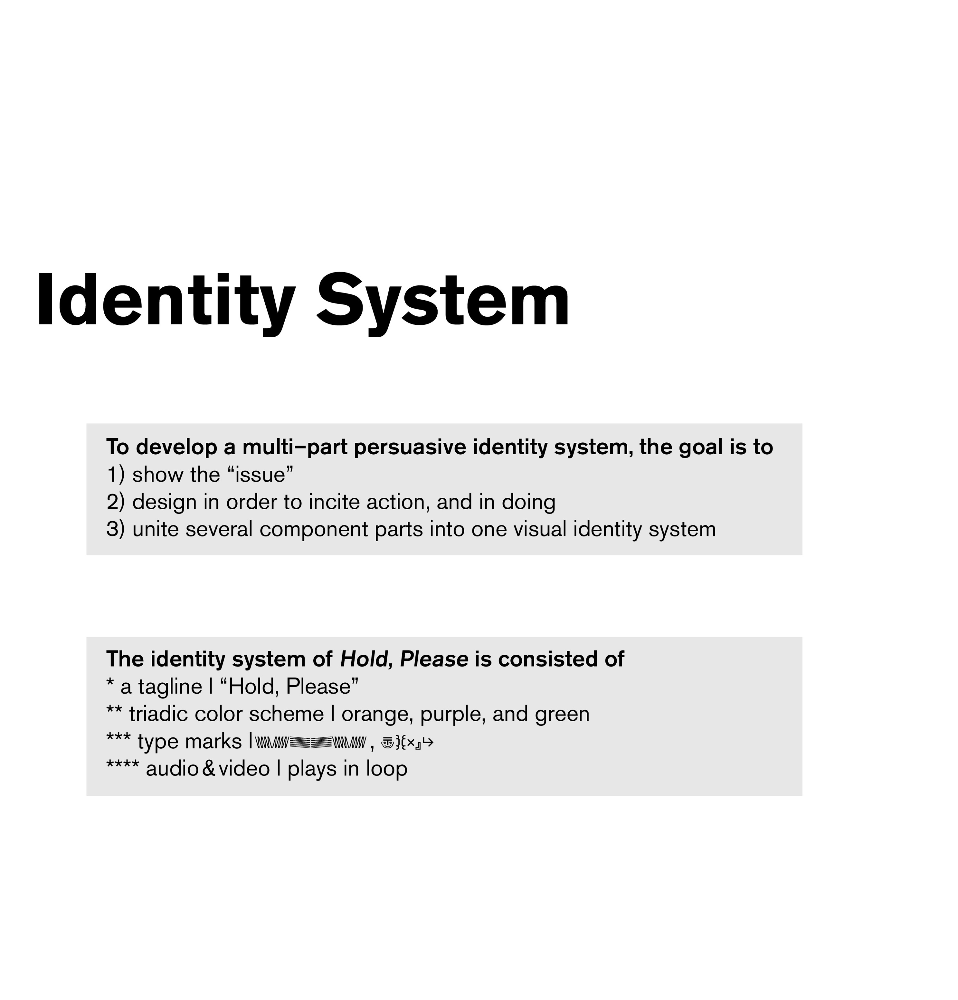

Hold, Please is a campaign about the issue of a long hold for customer service call. I amplified this issue with a set of visual system which consists of a tagline, Hold please, a triadic color scheme, type marks, and audio in loop.
Software Used
Adobe Creative Suite
Cinema4D
Problem
We all have been in a situation where we wait forever to speak to a customer service representative.
A playful element is used to encourage users to find other activities to pass time faster while on hold. I consider this inevitable problem not merely as negative.


Motion Graphics
Process
The question I wanted to answer while considering the final logo was: “how can I show the longevity the most efficiently?” The solution I came up with was to represent the type marks as both the telephone cord and rhythm of the hold music. I elongated the tagline “hold, please” vertically to mimic how the text looks like when you scroll down on a laggy website.